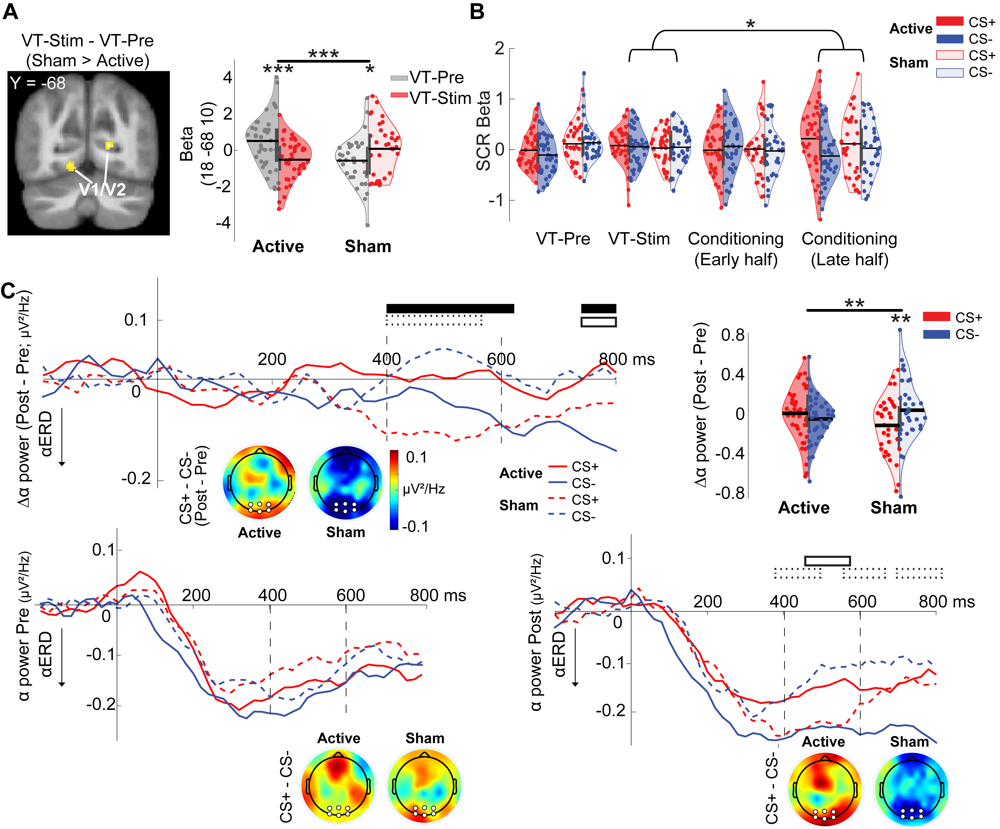
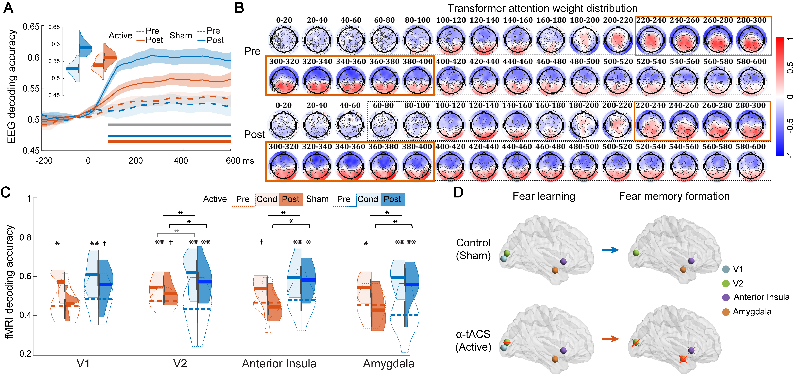

Manuscript submitted. Source data and analysis code will be released upon acceptance.
This project demonstrates my role as a data scientist and statistician in a high-dimensional neuroscience study. I contributed to the quantitative analysis pipeline integrating simultaneous EEG-fMRI, alpha-band oscillatory features, transformer-based neural decoding, cross-validation, repeated-measures statistical modeling, permutation-based inference, and reproducible result generation.
As a co-first author, my contribution centered on the quantitative and computational components of the project. The study required transforming complex multimodal neural recordings into interpretable evidence about fear-memory formation, consolidation, and long-term retention.
Built and refined analysis workflows for high-dimensional EEG-fMRI data, including neural feature extraction, decoding-ready data matrices, quality-control checks, and reproducible result generation.
Designed and implemented statistical inference procedures, including repeated-measures ANOVA, follow-up tests, effect-size reporting, regression modeling, and multiple-comparison correction.
The project investigates how transient threat experiences become persistent long-term fear memories. The central hypothesis is that sensory cortical disinhibition supports the consolidation and retention of fear memory in humans.
The study combines high-definition alpha-frequency transcranial alternating-current stimulation over early visual cortex with simultaneous EEG-fMRI and transformer-based neural decoding. Fear-memory traces were tracked at approximately 15 minutes, 24 hours, and 7 days after conditioning.
Simultaneous EEG-fMRI on Day 1 and high-density EEG on follow-up sessions.
Alpha-band ERD, time-resolved EEG bins, ROI-level fMRI beta estimates, and decoding-ready neural features.
Transformer encoders classified CS+ versus CS− responses to quantify neural fear-memory traces.
Fold-based validation was used to estimate participant-level and ROI-level decoding performance.
Repeated-measures ANOVA, follow-up t-tests, regression modeling, and effect-size reporting were used for hypothesis testing.
Time-resolved EEG analyses used correction procedures to control false positives across temporal bins.
EEG and fMRI responses were used to train compact transformer encoders to classify conditioned threat cues from safety cues. Increases in decoding accuracy from pre-conditioning to later sessions indexed neural memory traces.
Occipital alpha event-related desynchronization was analyzed as a neural marker of visual cortical disinhibition. The study tested whether alpha desynchronization predicted later memory-trace strength.
Repeated-measures ANOVA tested Phase, Group, and interaction effects. Follow-up tests characterized within-group memory-trace changes, while regression models linked alpha desynchronization to long-term decoding strength.
Active α-tACS reduced visual cortical activity, validating stimulation effects in V1/V2.
Skin conductance responses confirmed successful conditioning, without evidence that α-tACS impaired initial learning.
α-tACS blocked conditioning-potentiated occipital alpha desynchronization.
Transformer decoding revealed time-resolved fear-memory traces beginning at early sensory processing stages.
Decoding identified sensory-limbic memory representations in visual cortex, anterior insula, and amygdala.
Alpha desynchronization predicted memory-trace strength at 24 hours and 7 days.


Repeated-measures ANOVA, mixed experimental designs, effect sizes, post-hoc testing, and regression modeling.
Transformer-based classification, cross-validation, neural decoding, model evaluation, and high-dimensional feature learning.
EEG-fMRI integration, alpha-band analysis, ROI-level fMRI beta extraction, and longitudinal neural representation analysis.
Permutation testing, multiple-comparison correction, robustness checks, and interpretation of interaction effects.
Python, MATLAB, reproducible pipelines, data cleaning, feature construction, statistical reporting, and visualization.
Turning complex neural data into clinically meaningful evidence about fear, anxiety, and trauma-related mechanisms.
Source data and analysis code will be deposited in the laboratory GitHub repository upon acceptance of the manuscript.
Repository: https://github.com/LiLabFSU/
Citation information will be updated after publication.
@article{brown_ma_2026_sensory_disinhibition,
title = {Sensory cortical disinhibition underlies long-term fear memory in humans},
author = {Brown, Joshua A. and Ma, Yijia and Wang, Yifan and Massa, John J. and Cheng, Peter Kuan-Hao and Chen, Chaowen and Ding, Mingzhou and Schmidt, Norman B. and Milad, Mohammed R. and Soares, Jair C. and Dolan, Raymond J. and You, Chenyu and Li, Wen},
journal = {Manuscript submitted},
year = {2026}
}